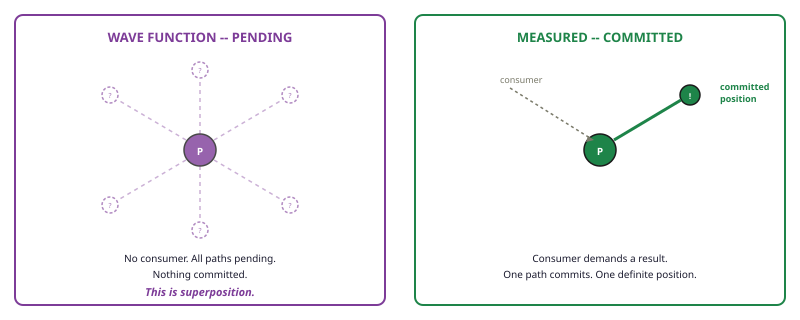
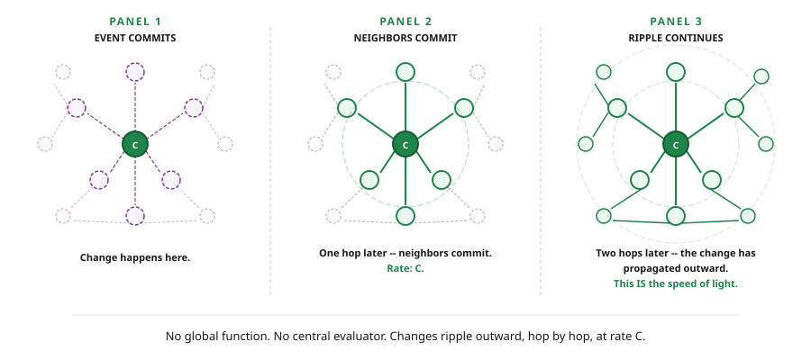
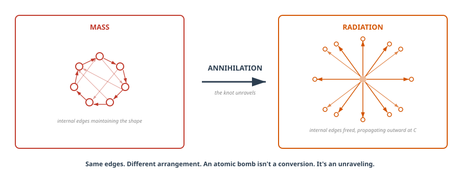
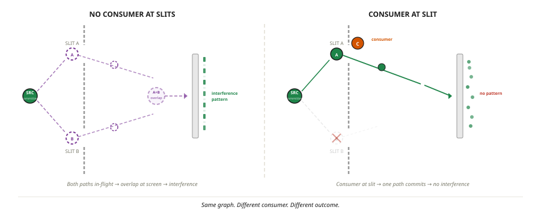
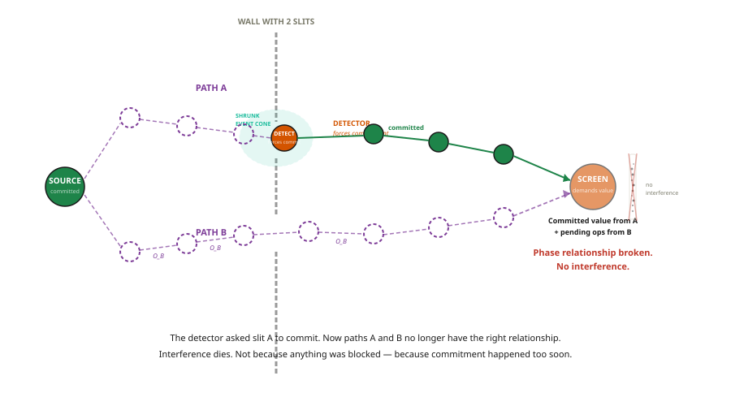

When someone asks if I have any hobbies, this is it. On the surface this will seem odd, to “ponder the universe” as a hobby.
But I’d argue it’s actually a well-known fact that the best way to spend ANY amount of time on ANY amount of drugs is to sit back and go “YO BUT what IF LIKE…”
Now as a warning. I have the type of intelligence that seemingly evaded every test it ever came across.
But to quote Good Will Hunting, “I can’t paint you a picture, I can’t hit the ball out of Fenway, and I can’t play the piano, but when it comes to wild imaginative theories on a subject I hardly know... I could always just play.”
I would imagine having a passion for a subject you can’t fully grasp is all that is really needed for the seeds of AI psychosis to truly take hold.
But this special little “hobby” of mine started because I was curious if anything is truly “random”. 9 years and a lot of PBS SpaceTime, here we are.
Now, I KNOW the odds that someone gets committed rise significantly the moment they start saying “I have a theory of the universe.”
So to get ahead of whoever plotted to get Kanye — here’s what this actually is.
This is my best guess on how it could all work. The odds any of this is right are about as close to zero as something can be. But if even one concept inspires a thought in someone more capable, even if born out of pure opposition, then I’d consider that a win.
At the very least, having a link to this on the World Wide Web makes it easy to send an advanced briefing for any dinner party I should be expected to attend in the future.
Cheers,
A Very Serious Person (Greg)
The foundation here draws heavily from causal set theory, Wolfram’s project, and loop quantum gravity. If this piques your interest, start with those. They have the math we don’t.
Chapter 1: You Are Mario
Alright let’s go. So all you need to know is physics has two main theories. General relativity describes the big stuff, quantum mechanics the small stuff. It’s very similar to East and West coast rap in the 90s. Both are great in their own respects but they are forcing us to pick a side.
So in our best effort to sit everyone down and ask, “can’t we all just get along?”, we have to accept something that at first might sound a little bit crazy... and that is... “it was all a screen Dream”
You are Mario. Not metaphorically. Your reality is taking place on a screen. There is a structure underneath that represents your world, and you have no direct access to it. But don’t worry, there could be worse things than life as an Italian 2D plumber.
This sounds strange. But you deal with two-layer systems every day. Your monitor shows letters. Your computer stores ones and zeros. The letters are real — you’re reading them right now. But what’s actually stored looks nothing like what you see. We build and use these systems every day, they work like super duper well.
We’re saying reality works the same way. What you experience — solid objects, a handful of rice, a gulp of water, all taking place on the screen world. It’s produced by something underneath that you cannot see and have never touched. To be honest, it’s not exactly a screen but this analogy gets you 90% of the way there. The point you need to get is there are layers to this shit.

Now here’s what makes this more than a fun idea. When you accept that reality has two layers, a whole list of genuinely weird things stop being weird. Things like:
- Why can’t anything travel faster than light? Every other speed limit has a reason. This one just... is.
- Why can’t you shield gravity? Got radiation? Lead stops it. Electromagnetic field bothering you? Faraday cage. Gravity? Nothing. Nobody has ever shielded gravity. Not once.
- Why does looking at something change it? Not touching it. Not bumping it. Just looking.
- Why do two particles on opposite sides of the universe give correlated answers instantly?
- Why does time slow down near a black hole? Yes — this is real. How fast time passes actually changes depending on where you are. Your phone corrects for this every single day or your GPS would be wrong by 10 kilometers.
- At what age can a man know for sure that he won’t go bald?
So let’s try and explain this. If we roll with the idea you are Mario and there is another layer? What “IS”, this other layer? Are you 1’s and 0’s?
The other layer is a graph. A graph is just dots connected by lines. You already know graphs.

Chapter 2: You Already Live in One
Okay so here is the twist. On some level you already accepted this whole “layers” to reality idea. You just didn’t quite call it that. But what do you think spacetime is? Look up any textbook and you will see fabric being warped... can you see this fabric? Can you see the warping? The answer is... (drumroll)...no.
You might never have thought about it, but what IS spacetime? This is a quote from John Archibald Wheeler, the physicist who named black holes and gave us the most famous summary of Einstein’s theory:
“Matter tells spacetime how to curve, and spacetime tells matter how to move.”
Beautiful sentence. Now what THE FUCK does that even mean? It tells you what spacetime does. It doesn’t tell you what spacetime is.
Well it’s a graph. When they do math on spacetime they actually treat it as a graph, it’s a specific type of graph called a manifold. So tada, this graph nonsense does not seem so hopeless. It’s worth noting that there are major theories and projects that treat the universe as a graph so this idea is taken seriously in some circles.
Okay so if our logic tracks and spacetime is a graph, and we have been researching it for 110 years now... let’s cheat a little bit and see what the research tells us our graph MUST look like.
Speed limit. Nothing travels faster than one hop per tick. That is the speed of light. The speed of light has NOTHING at all to do with light, it is just the fastest the graph or anything can change.
That’s c. Not because there’s a cosmic speed enforcer — because there’s no mechanism to skip a connection. You can’t jump three edges in one tick any more than you can skip three steps on a staircase in one step.
3+1 dimensions. Three dimensions of space plus one of time. Sick, we got a 3D graph. Time is the growth direction — new nodes being born. Not a fourth spatial axis.
Mass equals energy. A self-perpetuating topology. Call it mass when you weigh it. Call it energy when you release it. Same thing, different name. More on this shortly.
Shortcuts exist. Two points that look far apart on the surface might be direct neighbours in the graph. The surface says “far apart.” The graph says “one hop.” This matters. A lot.

The Rules
Now I want to focus on the rules for how this graph can change. And before you push back on the idea that I’m adding rules — take a second and think about this.
You already live in a world with rules. Hardcoded, unbreakable, non-negotiable rules. Nothing in this universe travels faster than 299,792,458 m/s. Things attract each other with an invisible and unshieldable force at exactly 6.6743 × 10−11 m³ kg−1 s−2. Every action has an equal and opposite reaction. These aren’t suggestions. These are laws that have never been broken once in the history of the universe. You just don’t question them because you grew up with them.
So the idea that a graph has rules should not be controversial. You’re already living under a set of them. I’d just like to propose fewer rules — and that some of the properties and constants we measure are emergent from a simpler set underneath.
These rules are really just a fancy way of saying: past events sum together to make new events. You already know this as basic cause and effect. We’re just being more detailed about how they sum.
Rule 1 — The nodes in the graph are events. Not points in space — events in spacetime. What is an event? I don’t know exactly, but it would have to be some representation of the smallest amount of change that can occur in the universe. A thing that happened, at a place, at a time. You can’t separate the where from the when.
Rule 2 — Edges are operations. This just means the connections in the graph carry the operations to generate the next event. Lucky for us this is just math. So 3 × 2 = 6. In our graph world that would be stored as (3) —×→ (2), where 3 and 2 are events and multiplication is the operation, producing 6. So really what we have is: summing all operations to any node gives us the next “layer” or event in reality. This seems trippy but your intuition already understands that past events make the future events. This is basic cause and effect with fancy terms. Someone smarter can figure out exactly what all the operations are in the graph.
Rule 3 — Your position in the graph gives rise to properties. The points themselves don’t have properties beyond position. All other properties are derived from their position in the graph. An easy way to think of this is in your family tree, I might put your name, but if someone asked “Are you a parent?”, we don’t keep that information on your point, we just look if there is anyone under you in the tree. So your position in the family tree tells me what you are.
Rule 4 — The lines point forward, the graph grows. A line from dot A to dot B means: A happened before B, and A could have influenced B. The lines carry the direction of cause and effect. Past to future. Again this is just saying that time moves on and there are past events that all sum together and say what the future event can be.
The main thing is your reality takes place at the edge. You can imagine an ocean of events that lead you to your “now”, and your experience is always on the surface.


So what the hell is gravity?
Three clues that something is off about gravity:
- You can shield every other force. Radiation — slap some lead on that bitch. Electromagnetic fields — get your ass in a Faraday cage. Gravity — nothing. Not once, anywhere, ever.
- Einstein showed gravity and acceleration are identical. Standing on Earth feels exactly the same as accelerating in a rocket at 9.8 m/s². Why would a force feel the same as motion?
- Physicists have hunted the graviton — the particle that carries the gravitational force — for nearly a hundred years. Never found one.
Three clues. One answer.
To explain gravity, we first need to explain mass. Remember we said our graph is events. That means whenever you try and think of an object like “a star” or “a photon”, none of that exists in our graph as a single point.
Mass, objects, particles — all the result of stable configurations within the graph. A collection of events that join together and form a specific shape. When we go to build the next layer of reality, to move from current now to future now, we sum all of those events. And for mass — when you sum all the operations together — it just generates the same shape again. That’s it. Mass is a self-perpetuating topology.
Your boss pays you $1000 (event 1), your landlord charges you $1000 (event 2). Those sum together so you were poor then, and you are poor now. Two events resulting in a stable configuration where you forever remain poor. If those events happen again in the next now, you have a self-perpetuating topology of poverty.
Now here is where it gets interesting. The fastest anything can travel in the graph is one hop at a time — the speed of light. And the speed of light has NOTHING to do with light, it’s just the fastest our graph is capable of change. Think about it: what would it look like if time stopped? Everything would be frozen, nothing would change. So our perception of time is really the rate of change occurring in our local region of the graph.
So why is time relative? Why does it slow down near a black hole?
If mass is a stable configuration, it means in order to get the NEXT state, we have to sum all of its edges. If we can only do one hop at a time — at the speed of light — then it takes longer to create the next “now” in that region of the graph.
This one is a bit of a head fuck. We need to separate “your time” — what you consider NOW — from the graph’s “time.” The graph’s time we measure in “ticks.” Your time we call “proper time.”
Think of it from Mario’s perspective. I could pause my N64, walk away, come back and hit play, and to Mario, no time passed at all.
Our graph is always ticking, but because some regions have to sum more edges, the graph does not grow evenly. Some areas like a photon are simple — they move at the speed of light. Other areas like near a black hole are dense — time SLOWS. This is time dilation.
So what is gravity then, and why can’t you shield it? Gravity is the TAX you pay to get the next “now”, to add a new layer to reality. It is unavoidable because it is the compute cost to process all the events in that region. More stuff means more gravity.
This is why gravity pulls you in — your graph has a path that minimizes compute, and that path is the force. It is a routing table through the graph.
Sounds like I am taking crazy pills again right? But this idea of minimizing work is actually an established thing in physics. It’s called the principle of least action and it shows that light, everything, will ALWAYS take the most efficient path in the universe, as if it had calculated every possible option. When we shine light into water, it bends at exactly the angle that minimizes travel time. Every fucking time. Instantly. Change the density, add obstacles — it still gets this right, instantly. This is freaky as fuck but somehow our universe IS maintaining the most efficient path.
So what we are proposing is not as crazy as it might sound on the surface.

The speed of light isn’t about light. It’s the speed that changes spread through the graph — one connection per tick. Light moves at that speed because it’s the simplest pattern. There’s nothing to slow it down.
Dense region = expensive paths through it = cheap paths curve around it. Objects following those cheap paths appear to curve toward the mass. That curve is gravity.

Why you can’t shield gravity: Gravity isn’t a signal traveling through the graph — it IS the density of the graph. Adding a shield adds more nodes, more connections, more density. Every attempt to block gravity makes it stronger. Like trying to reduce traffic by adding more cars.
Why gravity equals acceleration: Accelerating rapidly creates dense local structure. Dense structure IS curvature IS gravity. Same thing, same cause.
Why there’s no graviton: “What particle carries gravity?” is like asking “what particle carries the shape of a triangle?” There is no particle. Gravity IS the structure.
Gravity is routing pressure. Dense topology makes some paths expensive. The graph follows the cheapest path. That curve is gravity. You can’t shield it because a shield is more density — you’re making it worse.
Near a massive object, the graph has more connections per region — denser terrain. A pattern traversing that terrain needs more hops per cycle, so its internal clock runs slower. This isn’t theoretical — GPS satellites orbit where Earth’s gravity is weaker. Their clocks run faster than clocks on the surface by 45 microseconds per day. Without correcting for this, your GPS would drift 10 km per day. Your phone depends on this being real.
The Rest of the Lineup
| Mystery | What you were told | What it is in the graph |
|---|---|---|
| Speed of light | How fast light goes | Rate changes spread: 1 hop per tick. Nothing special about light — it’s the simplest pattern |
| Space | A box things happen inside | The graph’s shape. Distance = hop count. Minimum distance = 1 hop = Planck length |
| Time | A dimension you move through | New nodes being born. No births = no time |
| Time dilation | Mysterious relativistic effect | Near mass: denser graph, more hops per cycle, pattern’s clock runs slower |
| Arrow of time | Something about entropy | You can’t un-birth a node. Growth is irreversible |
| Universe expanding | Space stretching somehow | More nodes = more places for new nodes. Growth feeds growth |
| Black holes | Infinite singularity | Density so extreme no path leads outward. Not infinite — just one-way |
Sidebar, wanna see something cool: E = mc²
You’ve seen the equation. You’ve nodded at it. You almost certainly think it describes a conversion — mass turning into energy. Some violent process. A bomb.
It’s not a conversion. It’s an identity. Mass and energy are the same thing measured in different units. In natural units where c = 1, the equation is just E = m. That’s it. They’re the same.
So where does the c² come from? It’s a unit conversion factor — like inches to centimeters. Energy has units of kg·m²/s². Mass has units of kg. To get from one to the other, you need m²/s², which is a velocity squared. The only velocity the graph provides is c — one hop per tick — so the conversion factor is c². It’s not that two things are happening at c. It’s that the units require a velocity squared, and c is the only one available.
Now here’s the graph version. Mass is a stable topology — edges looping back, maintaining the same shape. Energy is the same edges, freed from the topology, propagating outward at c. Same edges. Different arrangement. And what is antimatter? The inverse topology — all operations reversed. Which means when matter meets antimatter, all operations cancel out.
So what happens when you annihilate a particle?

E = mc² is not a conversion. It’s an identity. Mass and energy are the same thing measured in different units. The c² is a unit conversion factor — like inches to centimetres. When a particle annihilates, nothing is converted. The knot unravels. Same edges, different arrangement.
Why c² and not just c? Dimensional analysis. Energy has units of kg·m²/s². Mass has units of kg. To convert between them you need m²/s² — which is a velocity squared. The speed of light is the only velocity the graph provides (1 hop per tick). So the conversion factor is c². It’s not that two things are happening at c. It’s that the unit conversion between kilograms and joules happens to require a velocity squared, and the graph only has one velocity to offer.
Chapter 3: There is no random.
Everything so far has been setup. This is what it was building to.
Remember the question that started all of this? Is anything truly random? Nine years ago that question bugged me enough to look into it and I ended up here. So this is where I finally give you my answer.
A Node Is Born
Remember that our graph is events, not things, not objects, not particles. Events. That means we need to record every event as it happens. And we said that reality is the sum of all the events that came before it.
But here’s the problem. Not all events arrive at the same time. Some events are close. Some are still traveling through the graph at the speed of light. And the next layer of reality has to be the sum of all the events that came before it — so if an event is on its way and WILL arrive in time, the node has to wait for it. It can’t produce the next layer yet. It would be wrong.
Let me show you what this looks like.
Your brother is expecting a baby today. You’re driving to a family function. You know — with absolute certainty — that someone at this function is going to ask: “are you an uncle yet?”
Right now, driving in, what’s the answer?
It’s not yes. It’s not no. It’s... probably? Maybe? Your brother hasn’t called yet. The baby might already be born and you just don’t know. Or the baby might not come until tomorrow. You are genuinely in a state where the answer does not exist yet — not because you’re hiding it, not because you’re confused, but because the event that determines the answer hasn’t reached you.
Now: will they ask before your brother calls? Or will he call before they ask?
If he calls first — “it’s a girl!” — and THEN your aunt asks, the answer is yes. You’re an uncle. Committed. Done.
If your aunt asks first — before the call comes — you have to give an answer with whatever you’ve got. “Not yet, as far as I know.” Different answer. Same you. Same family function. Different timing.
That right there is the whole thing. You are the node. The baby being born is an event traveling toward you. Your aunt asking is the consumer — the thing that forces you to commit to an answer. And the answer you give depends entirely on which events reach you before she asks.
The events that make it to you in time? We’re calling that your event cone.
Now here is where it gets interesting. Physicists have been studying this “waiting” state for a hundred years. At the really small scale — individual particles, single photons — this state of “pending” shows up in our reality as something very specific. A wave. Physicists call it the probability wave, and it caused an absolute shitstorm that is still raging today. This is the thing that made Einstein say “God does not play dice.” This is where you hear “many worlds,” “hidden variables,” “spooky action at a distance.”
The argument is about whether this wave represents something truly random, or whether there’s something underneath determining the outcome.
I’m saying it’s not random. It’s pending. And we have an actual reason WHY it has to show up as a wave — because events are still in transit through the graph, and the node hasn’t been asked yet. There is no value to report. Not a hidden one. Not one we can’t see. There isn’t one yet.
The Event Cone
You may have heard of the light cone — all events that could ever reach you given the speed of light. Your entire possible past.
We’re introducing a new concept. The event cone. It’s narrower. It’s not everything that could reach you — it’s everything that reaches you before you’re forced to commit.
Your aunt asking “are you an uncle?” — that’s the thing forcing commitment. Everything that reaches you before she asks — your brother’s call, a text from your mum, your sister posting on Instagram — that’s your event cone. The events that actually count.
Now let me deepen this with money.
Imagine you’re broke. Zero dollars in your bank account. Now two things happen at once: you write someone a cheque for $20, and your buddy says he owes you $40 and wire transfers it to you.
You don’t know how long the wire transfer will take to arrive. One day? Three days? You have no idea.
Right now, that cheque you wrote? It might bounce. Or it might clear. You genuinely don’t know. You’re in superposition. Not because the universe is being weird — because events are still in transit and you don’t know the order they’ll land in.
Now your friend goes to cash the cheque. That’s the thing forcing commitment. The bank has to produce an answer. Does the $40 arrive first, or does the cheque hit an empty account?
If the wire lands first: cheque clears. If the cheque hits first: it bounces. Nothing random happened. You just didn’t know the order because you couldn’t see the whole system. If you were watching this as an outside observer, the chain of events was obvious the whole time.
Same node. Consumer arrives early — small event cone, fewer inputs, one result. Consumer arrives late — larger event cone, more inputs, different result. Same dot in the graph. Different timing. Different reality.

The event cone is narrower than the light cone. It’s not what could reach you — it’s what reaches you before you’re forced to answer. When you’re asked determines what counts.
The Double Slit
Now let’s apply this to the experiment that broke physics.
The double slit experiment goes like this: you fire a single photon at a wall with two slits. Behind the wall is a screen. The photon hits the screen at a single point. One dot. Nothing weird yet.
But fire thousands of photons, one at a time, and the dots form a pattern. Not a random scatter. Not two clumps behind the two slits. An interference pattern — alternating bands of bright and dark, exactly the kind of pattern you get when two waves overlap and reinforce or cancel each other.
Each photon went through individually. There was nothing to interfere WITH. And yet the pattern says otherwise.
The double-slit experiment fires particles one at a time at a barrier with two slits. Each particle lands at a single point on the screen behind it. But over thousands of particles, the dots form an interference pattern — bands of high and low density — as if each particle went through both slits simultaneously and interfered with itself. Place a detector at one slit to learn which slit the particle went through, and the interference pattern vanishes. The particle behaves as if it only went through one slit. This has been confirmed with photons, electrons, atoms, and even large molecules.
Here’s what this looks like in our graph.
The photon enters as a set of events propagating through the graph. Two slits means two open paths. The events along both paths are pending — nobody has asked for their value yet. Both paths carry operations — the accumulated transformations along each route.
The screen is the thing that forces commitment. When a screen node demands a value, it sums the operations from every path in its event cone. Both paths contribute. The operations from path A and path B combine at the screen. At some positions they reinforce — bright band. At others they cancel — dark band. Interference pattern.
Not because the photon “went both ways.” Because pending nodes along both paths contributed operations to the screen’s event cone.

Now add a detector at one slit.
The detector is a thing that forces commitment — it demands the slit A nodes commit, right there, before those events reach the screen. Those nodes are no longer pending. They’ve produced a value. Committed. Done.
Now the screen gets: a committed value from path A, plus pending operations from path B. The precise relationship between the two paths — the thing that created interference — is broken. The event cone at slit A got shrunk by the detector. No interference. Pattern destroyed.
The detector didn’t block anything. It didn’t change the photon. It forced early commitment. It asked too soon.

Delayed Choice
Here is where it starts getting weird. And I mean properly weird.
What if we don’t decide whether to turn the detector on until AFTER the photon has already passed the slits?
This has been done. It works. If you choose to detect — even after the photon already passed the slit — the interference pattern vanishes. If you choose not to detect, the interference pattern remains. As if the photon somehow knew what you were going to decide. As if your future choice reached back in time.
In standard physics, this is genuinely unsettling. It looks like the future is affecting the past.
In our graph: it doesn’t matter when WE decided. Our decision is an event in OUR region of the graph. What matters is whether a consumer forced the slit nodes to commit before the screen asked. If no consumer demanded their value, they stayed pending. Our awareness of the decision, the timing of our choice — none of that is relevant. The graph doesn’t care about our story. It only cares about which operations composed at the screen node.
We are Mario. Our perception of “when” is our proper time. The graph has its own structure. Those are not the same thing.
The Quantum Eraser
Okay. Now the real one. This is my strongest piece of evidence that something like this model is actually what’s going on.
The quantum eraser experiment goes like this:
Step 1: Fire photon through double slit with a detector at slit A. The detector records which-path information. Interference should be destroyed. And it is.
Step 2: AFTER the photon has already hit the screen — after the result is supposedly locked in — an “eraser” device downstream destroys the which-path information the detector recorded.
Step 3: Look at the data, filtered by the eraser’s outcome. The interference pattern comes back.
Important: you only see the interference when you filter by the eraser’s outcome. The full, unfiltered data still shows no pattern. The eraser doesn’t magically restore anything for every photon — it reveals a subset.
Read that again. The detector already fired. The photon already hit the screen. The result should be final. And then an event that happens AFTER all of that somehow restores the interference pattern.
This drove physicists crazy. It looks like backwards time travel. The eraser seems to retroactively change the past.
But in our graph, something much simpler happened.
The detector applied an operation to the slit A nodes. Call it O. This operation is what “records” which-path information — it’s what forces the relationship between path A and path B to break.
The eraser applied the inverse operation. O−1. This is what “destroys” the which-path information.
Now: what is the net operation at the screen?
O composed with O−1 = identity. The two operations cancel. The net effect is as if neither the detector nor the eraser ever existed.

This is worth sitting with for a second. Because to us — inside the graph — the events happened in this order: detector fires, photon hits screen, eraser fires. It looks backwards. It looks like the eraser reached back in time and changed the result.
But in the graph, “when” something happens in our proper time is not the same as how operations compose. The detector added an operation. The eraser subtracted it. The net is zero. The slit A nodes were never actually forced to commit in a way that broke the phase relationship, because the operation that would have done it was cancelled by a subsequent operation.
Think of it like this. Someone adds 5 to your bank account. Then someone subtracts 5. Your balance didn’t “time travel.” Two things happened that cancelled each other out. The net is zero. It doesn’t matter what order you process them in.
The most confusing experiment in physics is function composition.
In the quantum eraser experiment, a detector at one slit records which-path information, destroying the interference pattern. Then an “eraser” device downstream removes that which-path information. When you filter the data by the eraser’s outcome, the interference pattern reappears — even though the detector already fired. Standard physics says the eraser “retroactively” changed the result. In graph terms: the detector applied a transformation, the eraser applied the reverse transformation. They cancel. The screen sees the same structure as if no detector existed. Nothing was erased. Nothing went backward in time. Two operations that compose to identity.
The quantum eraser is not spooky and it is not time travel. It is what happens when two operations cancel each other out. The detector applied an operation. The eraser applied the inverse. The net at the screen is identity — as if neither existed. In the graph, operations compose. Order doesn’t matter. The result is the sum.
This is, to me, the single strongest piece of evidence that something like this model is going on. Because the quantum eraser makes perfect, obvious, boring sense if reality is the sum of operations in a graph. And it makes absolutely no sense otherwise.
Two Very Different Neighbourhoods
Now picture two very different parts of the graph.
Deep inside matter — your chair, your face, the ground — every node is surrounded by neighbours that need answers constantly. A node barely exists before something forces it to commit. Event cone? Tiny. Almost nothing pending. Everything is asked immediately. That’s the classical world. Solid. Definite. Real.
Out in the quiet frontier — a lone photon in deep space, an electron in a vacuum — nodes are sparse. Nothing nearby needs the answer. A node can sit there pending for millions of ticks. Events keep arriving from distant regions. The event cone grows and grows. Lots of pending. Lots of “maybe.”
Same graph. Same rules. Just a different neighbourhood. Your chair doesn’t quantum tunnel because every atom in it is being demanded by every atom around it, every single tick. Zero time to accumulate anything interesting.
Quantum mechanics is what nodes look like when nothing has asked yet. Classical physics is what nodes look like when everything is always asking. Not different laws. Different neighbourhoods.
In standard quantum mechanics, “decoherence” explains why quantum behavior vanishes at large scales — a quantum system entangled with a large environment rapidly loses its superposition. In graph terms: large environments are busy neighbourhoods with consumers at every tick. Nothing stays pending. The math gives the same answer. We’re just describing the structure rather than the statistics.
The Rest of the Weird Stuff
Entanglement. Two particles share a common causal history — common ancestor nodes, shared transformations. They separate. Both pending. When you measure particle A, it commits — tracing back through shared ancestors. When you measure particle B later, it commits — same shared ancestors, complementary transformations. Correlated values. Not because A sent a message to B. Because both computations trace back to the same root.
No faster-than-light communication. Sealed envelopes from the same deck.
Tunneling. A particle hits a wall it shouldn’t be able to cross. Remember — shortcuts exist. Two nodes that look “far apart” on the surface might be direct neighbours in the actual graph, connected by an edge that doesn’t follow the emergent geometry. The particle doesn’t go through the wall. It takes a path the wall doesn’t cover.
Quantum tunneling is measured in every semiconductor on Earth — your phone depends on it. Alpha decay, scanning tunneling microscopes, and nuclear fusion in the sun all require particles to traverse classically forbidden barriers. The standard treatment uses a decaying exponential wavefunction inside the barrier. In graph terms: the probability drops because few graph edges cross the barrier region — but some do. The tunneling rate depends on how many shortcut edges exist, which maps to barrier width and height.
So Is Anything Random?
This is where I started. Nine years ago. Is there any event in this universe that does not depend on the events that came before it?
In our version: no. Every event is the sum of its inputs. Every input travels at a known speed through a known structure. The outcome was always determined by the topology. You just couldn’t see it coming because you’re inside the graph and information travels at C.
The quantum eraser didn’t travel backwards in time. Two operations cancelled. Net zero. The outcome was always going to be identity. We just couldn’t see it because the events reached us in an order that made it look impossible.
I’d rather be Mario than accept random.
Quantum mechanics is not spooky. It is not random. It is a node that hasn’t been asked yet — events still on their way through the graph. The moment something needs its value, it commits, and it was always going to give exactly that answer. You just couldn’t see it coming because you’re inside the graph.
Bell’s theorem (1964) proves no theory of local hidden variables can reproduce quantum correlations — specifically the violation of the CHSH inequality. Our response: node values are not predetermined hidden variables. Values don’t exist until commitment. But the graph’s topological structure — including shared causal history — is predetermined back to initial conditions. Whether this constitutes “local hidden variables” in Bell’s sense is genuinely open. Reproducing the exact cos²(θ) correlation function from graph topology is unsolved. It is the single most important quantitative gap in the framework.
Wild Guesses (Clearly Labeled)
If the framework is right — or even close — it might hint at some open questions. These are guesses. Enjoyable ones, but guesses.
The Standard Model as a topology catalogue. If particles are stable loops, the particle zoo might be a complete catalogue of loop structures the graph can sustain. Only certain topologies are self-reinforcing. The rest decay.
Dark matter as a topology without a consumer. What if dark matter is a self-perpetuating topology that never adjoins with the visible graph? It has internal structure — mass — so it exerts routing pressure — gravitational effect. But it never commits into the layer we can detect. Not invisible matter. Matter that exists in the graph but has no consumer in our region. This would explain why dark matter has gravitational effects but no electromagnetic interaction, no direct detection, no visible output.
Dark energy as frontier pressure. The graph keeps growing. New nodes create new places for newer nodes. The routing pressure at the expanding frontier — the tendency of the graph to propagate outward — might be what we’re measuring as dark energy. Not a force. Just the graph growing, with the edges always being the last place anything committed.
These speculations are not new territory. Causal set theory, loop quantum gravity, and Wolfram’s hypergraph project have all explored discrete spacetime with similar implications. The Standard Model symmetry groups would need to emerge from the graph’s topological update rules — partial progress exists in loop quantum gravity’s spin network approach. All three require serious mathematics before they become more than suggestive analogies.
Technical Summary
GL Theory — Technical Position
Core claim: Spacetime is a directed graph of discrete events connected by causal edges carrying algebraic operations. The causal structure is acyclic — effects cannot precede their causes — but the spatial subgraph may contain self-propagating topology. Those stable topologies are mass. The graph grows: new nodes are produced as functions of their causal predecessors. Node values are lazily evaluated — computed only when demanded by a downstream consumer. Causal influence propagates at C: 1 edge per tick maximum.
Relationship to existing work: This framework operates within discrete quantum gravity — specifically causal set theory (Bombelli et al., 1987), loop quantum gravity (Rovelli, Smolin), and Wolfram’s hypergraph physics project (2020). The novel framing, if any: nodes as thunks, commitment as forced evaluation by a consumer, the event cone as distinct from the light cone. Standard decoherence theory describes the quantum-to-classical transition statistically; this describes it structurally.
Six axioms:
- Nodes are spacetime events — where and when, inseparable.
- Edges are directed causal relations carrying operations.
- The graph grows: new nodes born as edge-operation products of existing nodes. Growth IS time.
- Node properties derive entirely from position — from paths reaching the node and their accumulated operations. Nodes store nothing.
- Changes propagate at C: 1 edge per tick maximum.
- Nodes are pending until demanded by a consumer. Pending nodes accumulate inputs as events arrive. Commitment freezes inputs and computes the value. Committed nodes are immutable.
What is claimed vs derived:
- Time dilation: qualitatively derived from causal density. Consistent with GPS corrections to ~10−10. Not formally derived.
- Gravity as routing pressure: structurally consistent with GR geodesics. Einstein field equations not derived.
- Mass as self-perpetuating topology: consistent with LQG particle models. Spatial cycles whose edge-operation products reproduce the same topology each tick. No mass spectrum derived.
- Measurement as consumer-forced commitment: structurally reproduces decoherence. Born rule not derived.
- Bell correlations via shared causal topology: structural argument only. cos²(θ) not derived.
- Tunneling as graph adjacency: edges need not respect emergent spatial geometry. Two nodes “far apart” on the surface may be graph neighbours — a particle can traverse that edge in one tick. This is tunneling.
Potentially fatal gaps: (1) Einstein field equations not derived. (2) Lorentz invariance requires Poisson sprinkling from causal set theory — borrowed, not derived. (3) Born rule unexplained. (4) Edge algebra unspecified. (5) Bell inequality violation not quantitatively reproduced.
Prior art to engage: Causal set theory · Loop quantum gravity · Wolfram physics project · Penrose spin networks · ’t Hooft cellular automaton interpretation.
Outro
That’s it. That’s my grand theory of how it all ought to work. The odds any of this is right are about as close to zero as something can be. But if even one concept inspires a thought in someone more capable — even if born out of pure opposition — I’d consider that a win. And in this little version of the world, there is no such thing as random. What does that mean for free will? It’s not so much that you can’t choose. It’s that you will always have chosen the same thing.